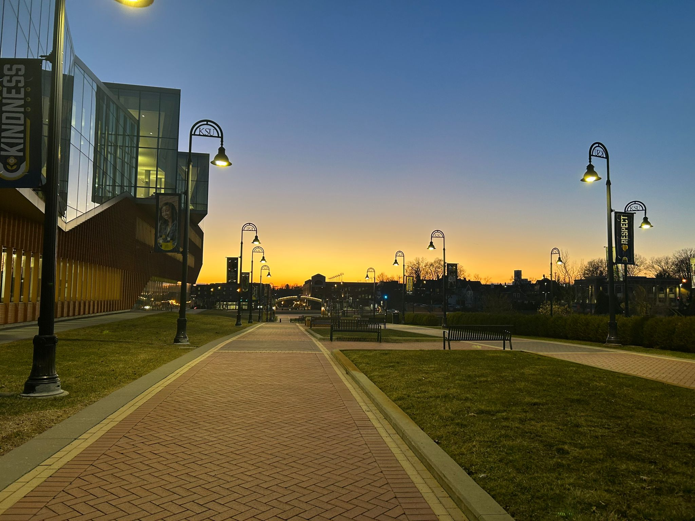
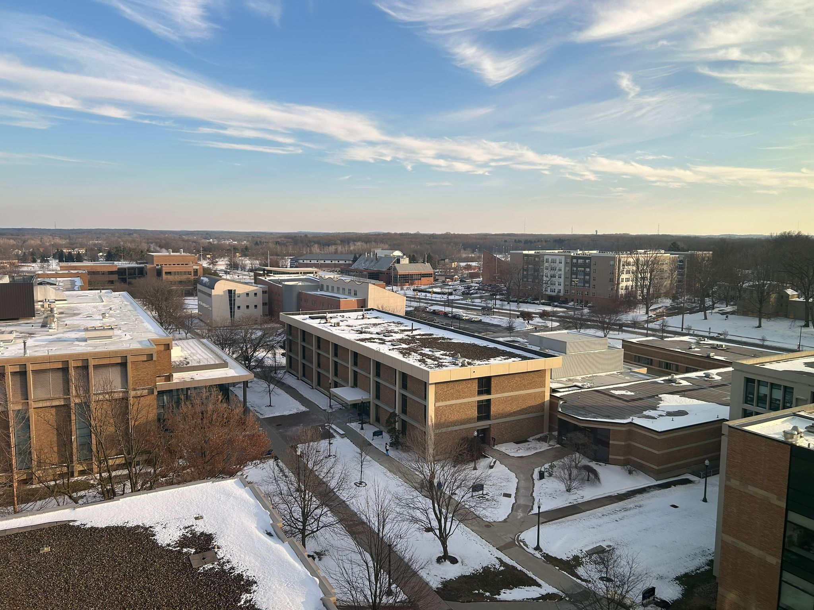
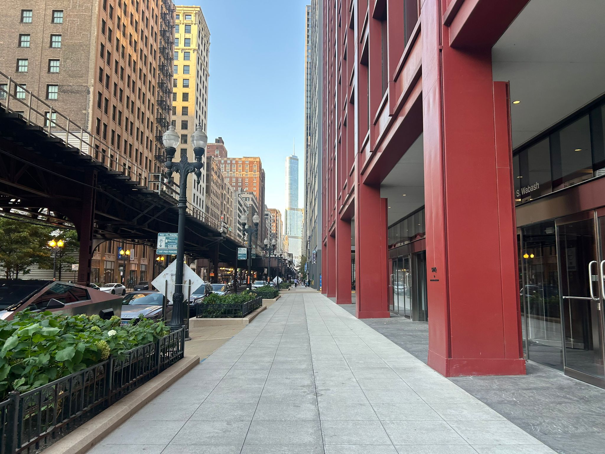

I'm a graduate student at Kent State University in Ohio, where I work as a research
assistant at GUANS Lab. Broadly, my interests are neuromorphic computing, audio
processing/classification, deep learning in general, as well as quantum computing and HPC.
Previously, I worked as an Undergraduate Researcher at GUANS Lab, where I worked on projects
related to Deep Learning, Spiking Neural Networks, Neuromorphic Computing and Audio
Processing/Classification. I also have experience working as an IT Technician at the Division
of IT in KSU. Additionally, I've tutored for classes for the Computer Science department.
Participating in research on Neuromorphic Computing models. Exploring how we can take advantage of
Spiking Neural Networks (SNN)
to improve energy efficiency, accuracy and inference time, in particular for low-power devices and for
problems that can take advantage of the temporal event-based nature of SNNs.
Research tools I'm familiar with:
Building and training models using PyTorch
Evolutionary and backpropagation based training for SNNs
Audio preprocessing and feature extraction
Spike encoding techniques
Common data/visualization tools like matplotlib, numpy
Additionally, I've contributed to planning and writing academic papers in a professional research setting,
as well as reading and analyzing other people's work in the field. Beyond SNNs, I like understanding the
math behind these models, and have learned about other modern models like diffusion for generative AI.
A fullstack book review platform. Frontend written with React and TypeScript, backend REST API made using
Java with the Spring Framework. I set myself the challenge of only using raw SQL queries rather than relying
on ORMs, and designed and implemented the frontend interface without prebuilt components or CSS libraries.
Currently has:
Fully fledged REST API written in Spring Boot for a prototype pet adoption web app. Developed as my final
project for in-person software developer training at Latin-American bank Bradesco. Features include:
Authentication and Authorization using JWT tokens
Pet matching system based on preference
Location data for matching system (Google Maps API)
Command line tool. Attempts to find the value that generated a hash by using a wordlist, or by
generating words by bruteforce based on certain criteria.
GUI application written in Java with the Swing API. Searches for occurrences of a word within text
files. Can load text individually or from a directory of files.
Sunset in the parking lot outside KSU's Mathematical Sciences Building
Sunset in Itapema, Brazil

Kent State's Architecture Building

East side of KSU campus viewed from the library
Chicago viewed from the 103rd floor of Willis Tower

South Loop, Chicago
Downtown Chicago
About me
Last updated: August 12, 2026
I recently (May 2026) completed my undergraduate degree at Kent State University (KSU) studying Computer
Science (Cybersecurity concentration) with a minor in Applied Math. I've also received a degree in Liberal
Arts from KSU as part of a two-year program in partnership with the Brazilian university PUC-PR
(Pontifícia Universidade Católica do Paraná). During my time as an undergraduate student I worked as a
tutor for the computer science department, in addition to working on research at Dr. Qiang Guan's Lab
(AI, Neuromorphic Computing, Spiking Neural Networks, Audio Processing). As part of my undergraduate
research work, I have developed two projects that involved applying/evaluating Spiking Neural Network
models on audio processing problems.
Currently, I am a first-year PhD student working as a graduate research assistant, under the supervision
of Dr. Qiang Guan. I am working on projects related to quantum computing, mostly at the HPC + Quantum
integration level. However, I am open to exploring any projects or ideas in either quantum computing or
deep learning in general.
Other than that, my interests include reading, playing video games, cooking and metal music.